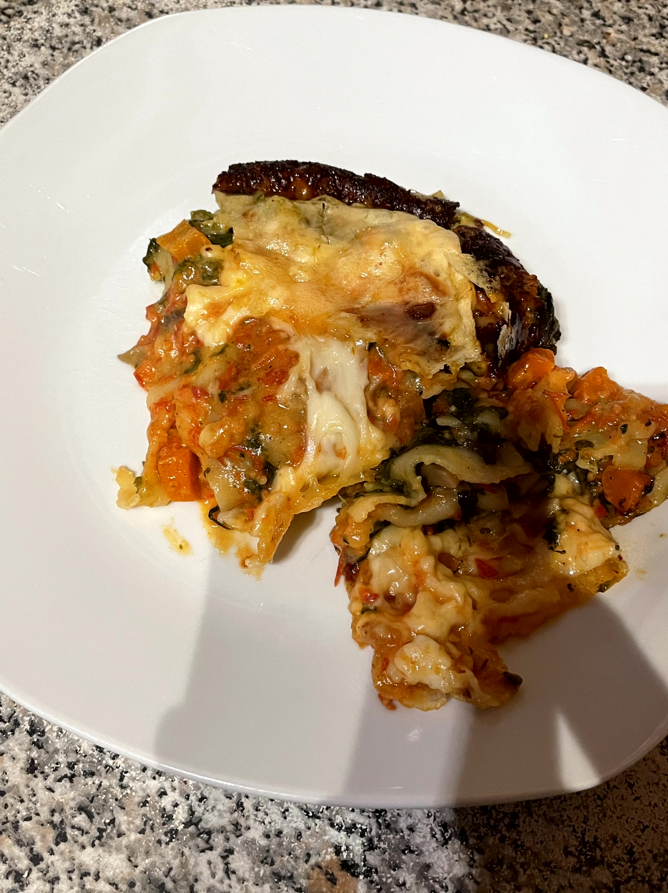

Vegetarische Lasagne
- 50g Butter
- 1 Zwiebel
- 2 Karotten
- 400g Champignons
- 600 g Blattspinat
- 5 Esslöffel Milch
- 100g Frischkäse
- 1 Esslöffel Gemüsebrühe
- 1 Knoblauchzehe oder Knoblauch Gewürz
- Salz
- Pfeffer
- Chilli Gewürz
- 200g geriebener Käse
- 1 Packung Lasagneplatten
- 50g Butter
- 2 Esslöffel Mehl
- 200ml passierte Tomaten
- 150ml Schlagsahne
- 1 Knoblauchzehe oder Knoblauch Gewürz
- Salz
- Pfeffer
- Chilli Gewürz
Zutaten
Für die Tomatensoße
- Karotten, Champignons und Zwiebel klein schneiden und in einer Pfanne anbraten
- Die Milch dazugeben und den Rahmspinat darin erhitzen, bis die Blätter nicht mehr gefroren sind und die Rahmsoße leicht eingedickt ist
- Jetzt den Frischkäse sowie das Gemüsebrühpulver dazugeben und gut verrühren
- Eine Knoblauchzehe dazu pressen oder mit Knoblauchgewürz und Salz, Pfeffer und Chili würzen und abschmecken
- Die Butter erhitzen, bis sie vollständig zerlaufen ist
- Das Mehl hinzugeben und zu einer glatten Masse verrühren.
- Die passierten Tomaten und die Schlagsahne dazugeben und verrühren
- Alles kurz aufkochen lassen
- eine Knoblauchzehe dazu pressen oder mit Knoblauchgewürz und Salz, Pfeffer und Chili würzen und abschmecken
Zubereitung
Fünf Minuten köcheln lassen, bis die Soße schön eingedickt ist
Die Tomatensoße in einem seperaten Topf zubereiten
Die Lasagne in eine Auflaufform geben
Mit der Tomatensoße und dem Spinat dünn den Boden einer Auflaufform bedeckenund jetzt abwechselnd Lasagneplatten, Spinatgemisch und Tomatensoße darin schichten.
Mit der Soße abschließen und lückenlos mit geriebenen Käse bestreuen.
Die Lasagne in den Ofen backen
Im heißen Backofen bei 180 °C Umluft ca. 30 Minuten backen.Nach dem Backen noch fünf bis zehn Minuten im ausgeschalteten Backofen stehen lassen,
dann bleibt die Lasagne perfekt in Form und zerläuft nicht.